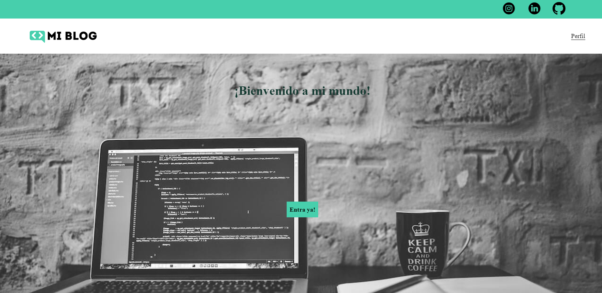
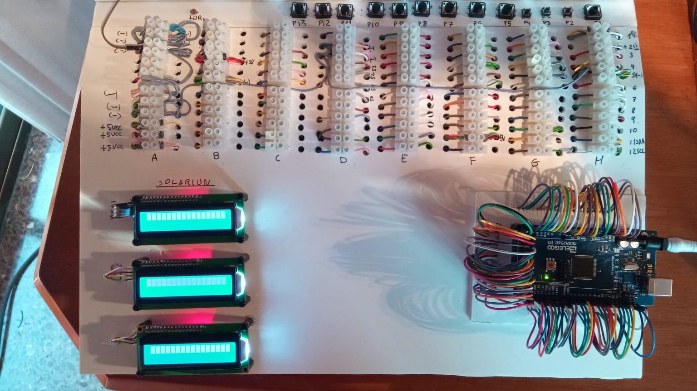

Mi blog
Blog personal en HTML y CSS en el que me ha servido para aprender como hacer una página desde 0. El blog es un curso de Platzi llamado "Curso Práctico de Maquetación en Css" en el que te dan la base y como estructurar el proyecto. Yo lo he ido... adaptando a mi manera y añadiendole cosas. Lo voy a utilizar tambien de curriculum ya que mi intención es subirlo a Linkedin. He aprendido a utilizar diferentes tipos de display en CSS, utilizar pseudo clases para los botones, como utilizar los media querys, como linkear a mi Instagram, Linkedin, y Github , como añadir una imagen de fondo desde Css. También como tratar las imagenes para que la página vaya mas fluida. Es el primer proyecto en HTML y CSS en el que me doy cuenta que se hacer cosas por mi cuenta y adaptarlo a mi manera buscando información. Mis mayores problemas por ahora son las de adaptar los tamaños dependiendo lo que escribes o cuando cambias cualquier imagen. He buscado en internet y me dan la solución de introducir un overflow que no se si es lo mas óptimo. Seguiré aprendiendo. Mi siguiente paso es hacer un curso de Mobile First, que es hacer una página web desde un tamaño de móvil y adaptarla mas tarde con media querys y despues mi idea es clonar una págine que me guste por mi mismo desde el principio.
Leer más

Clon de Google
Clon de Google con HTML y CSS. El proyecto es un curso de Platzi llamado "Curso Práctico de HTML y CSS" en el que doy mis primeros pasos en cuanto a saber como posicionar las cosas con "display flex" o "display grid" que más tarde continuaría... aprendiendo mas sobre esos apartados haciendo un curso de cada uno de ellos. Este proyecto me ha enseñado como hacer una barra de navegación o un footer por primera vez. También como puedo hacer el efecto de una sombra en el buscador con una pseudo clase.
Leer más

Proyecto grado superior
Se trata de mi proyecto final de grado superior realizado en Escuelas Profesionales Luis Amigó con el que me gané una mención honorífica al mejor proyecto de dicho curso. Se trata de hacer un proyecto de gimnasio en el que dispones de un enunciado con las... partes obligatorias que tiene que tener el gimnasio con diferentes problemas que tengo que resolver utilizando mi Arduino. Las partes obligatorias es que tenia que realizar control de aforo, de temperatura, de iluminación... etc en las diferentes salas del gimnasio. La parte mas importante era la programación , pero también hice una maqueta como se puede ver en las imagenes. Para el proyecto también era obligatorio hacer los planos de las diferentes salas, (las realice en AutoCad), los planos de conexión con los diferentes sensores y actuadores, (las realice con un programa llamado fritzing), un pliego de condiciones, un presupuesto real y estudios con entidad propia. El mayor problema que se planteo fue que el proyecto para que tuviera buena nota se tenia que realizar con un arduino , ya que si lo hacias con dos era bastante fácil ya que con delays funcionaba. Los delays hace que se pare el programa durante el tiempo que le pongas en milisegundos y al hacerlo con un arduino todos los pines estaban en funcionamiento y con delays el arduino no funcionaba bien. Asi que tuve que realizar el proyecto con milis() que es una función que te permite controlar el tiempo de ejecución de un comando. Lo que me llevo mucho mas tiempo pero aprendí mucho más.
Leer más